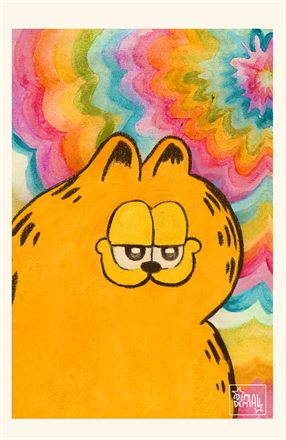
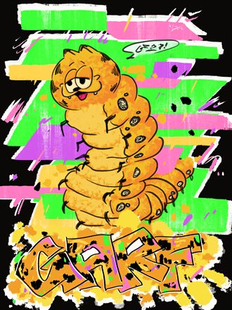

1. ¿Qué busca comunicar tu trabajo artístico?
Mi trabajo artístico busca ser un espacio lúdico y vibrante, donde el color es protagonista y se convierte en un vehículo para motivar, liberar emociones y, en ocasiones, provocar una risa inesperada.




Archivo Oficial
Demian Tenorio Rico ingresado en 2023 a la Lic. en Artes Visuales (UG) <3
Soy Demian Tenorio Rico, conocido en Internet como @dmxn_08, un artista transgénero y guanajuatense. En 2023 ingresé a la Licenciatura de Artes Visuales en la Universidad de Guanajuato. El propósito de mi obra es crear un espacio divertido y contrastante con lo real e irreal.
Las técnicas que suelo usar son dibujo (principalmente con colores), escultura, arte objeto, bisutería y dibujo digital; con ellas exploro temas y eventos de la cultura pop para invitar al pensamiento de la sátira y la descontextualización.
Soy Demian Tenorio Rico (@dmxn_08), artista transgénero y guanajuatense.
Mi trabajo artístico busca ser un espacio lúdico y vibrante, donde el color es protagonista y se convierte en un vehículo para motivar, liberar emociones y, en ocasiones, provocar una risa inesperada.
Exploro lo cómico y lo absurdo como herramientas de desahogo y juego, generando un contraste constante entre lo real y lo irreal. Ese choque me permite cuestionar lo cotidiano y abrir la puerta a mundos semireales que se sienten familiares y extraños al mismo tiempo.
Visualmente, mi estilo se nutre del arte semirrealista y de la riqueza creativa de los fandoms en internet, donde lo espontáneo y lo exagerado conviven con lo íntimo y lo auténtico. Mis piezas son un reflejo de esa energía digital: coloridas, irónicas y, sobre todo, vivas.
En esencia, busco que mi arte sea un recordatorio de que lo absurdo también puede ser bello, y que en la mezcla entre lo serio y lo lúdico encontramos nuevas formas de sentir y expresarnos. Puedes revisar mis tarifas en Comisiones o escribirme desde Contacto <3